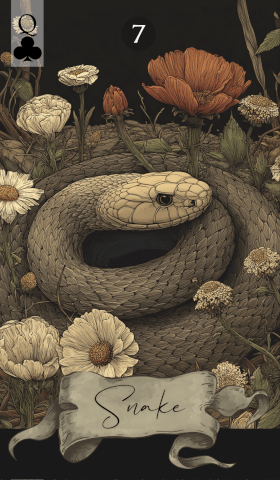

第 7 张 · 梅花 Q
蛇
欺瞒
纠葛
操控
心机
诱惑
蛇滑进牌阵，带来一层复杂与心机。它提醒你留意欺瞒与操控：表象未必可信，纠葛多半会浮现。
免费抽牌 →
蛇代表纠葛、欺瞒，以及被人操弄的处境。它出现在牌阵里，往往说明事情并不像表面那样。有人藏着真正的动机，横在面前的障碍需要小心绕行。这张牌要你保持谨慎，弄清楚谁可能正站在你的对面。
欺瞒之外，蛇也象征机敏与诱惑。它鼓励你把身处的那团乱麻一点点解开，用头脑和策略去应对。无论面对的是一个滑头的竞争者，还是一段缠成死结的私事，蛇都建议你靠自己的判断力看穿伪装，把真相找出来。
在感情里，蛇可能指向欺瞒，或者一段变得复杂的关系。也许有第三个人介入，也许有诱惑却没有真心。它提醒你看清对方的意图，甚至看清你自己的意图，别被魅力和吸引力牵着走偏。
工作上，蛇提醒你提防背后的算计和不光明的手段。某个同事或某件事，并不像看上去那么简单。留意办公室里的人际角力，别让自己卷进欺瞒之中。把话说清楚，把步骤想在前面，才能走过这段不太平的路。
蛇建议你保持谨慎，也保持敏锐。相信直觉，对那些未必真心为你着想的人多留一分心。用清醒的头脑和明确的策略去处理问题，绕开障碍，把底下的真相翻出来。
蛇的含义常被邻牌加重或减轻，也由此看出眼前这份欺瞒或纠葛究竟属于哪一种。以下是它与牌组中其余每一张牌的组合：
传统图样里，蛇盘绕在草丛间，象征潜藏的威胁与危险的吸引力。它既是诱惑，也是穿过复杂局面所需的智慧。在今天的解读中，它依然提醒读牌人往表象底下看，对眼前所见多问一句。